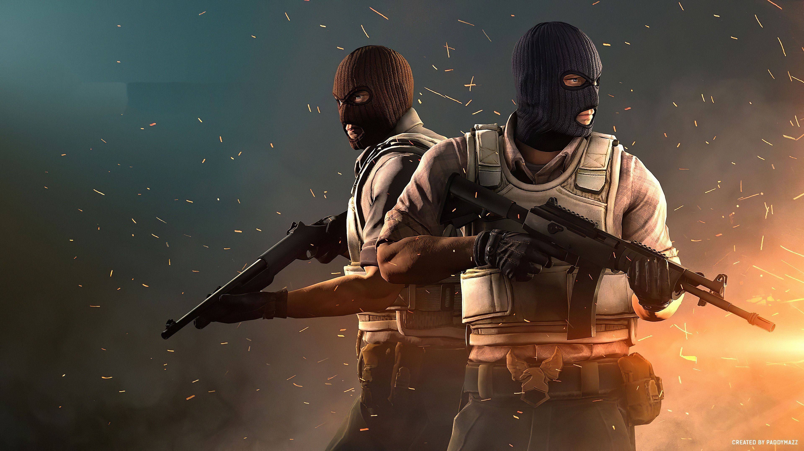

Caso você tenha morado em uma caverna nos últimos quatorze anos e nunca tenha ouvido falar da série, o primeiro Counter Strike foi desenvolvido no ano de 1999 por dois jovens chamados; Minh Le e Jess Cliffe. Inicialmente o CS era só um mod para o game Half Life, mas o mod fez tanto sucesso, mas tanto sucesso, que a Valve decidiu comprar os direitos e transformá-lo em um jogo de verdade. E além disso, diferente do que muitas empresas fazem, ao invés da Valve dar uma micharia para os criadores e ficar por isso mesmo, ambos foram contratados para ficar a frente do desenvolvimento do jogo.
Uma curiosidade que a grande maioria que joga CS não sabe é que aquela voz que fala: "Terrorist Win" é voz do próprio Jess Cliffe. E sim, até hoje os dois trabalham na Valve. Quer dizer, o Jess trabalha, o Le saiu pra trabalhar em um outro jogo chamado Tactical Intervention em 2010, depois de várias versões do jogo, a Valve lança o Counter Strike Global Offensive , que meio que veio para ser um CS definitivo.
O jogo não conta com um enredo ou algo do tipo. Tirando o modo offline contra bots, CS é um jogo totalmente focado na estratégia e na competitividade do modo Online. Os 2 principais modos do jogo são o modo desarme: Em que o time Terrorista precisa armar uma bomba, e o Time Contraterrorista precisa evitar que essa bomba seja armada. E o modo refém, em que o time Contraterrorista precisa resgatar um refém e o time Terrorista precisa evitar que isso aconteça. Ambos esses modos podem ser jogados tanto em modo casual quanto em modo competitivo.
Como a maioria dos jogos online, o CS GO conta com um sistema de busca de partidas. Nesse sistema você pode escolher o modo que quer jogar, mas além disso você também pode escolher entre partidas casuais e partidas competitivas. A diferença entre as duas é que o modo casual é feito pra jogadores casuais, não tem ranking, você pode sair a qualquer momento da partida, enfim, é pra quem só quer se divertir. Já o modo competitivo, você não pode sair no meio da partida, você tem uma espécie de ranking, e você encontra players muito melhores, e muito mais sérios para jogar contra e com você.